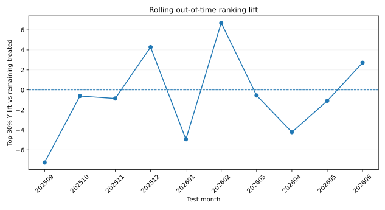
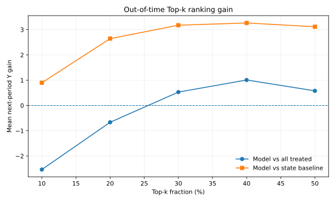
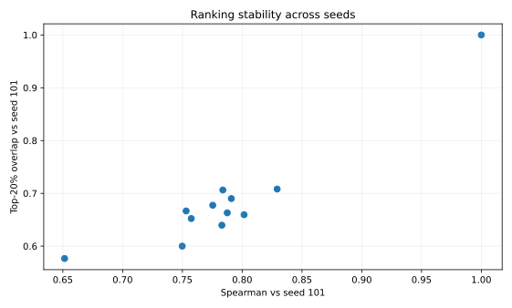
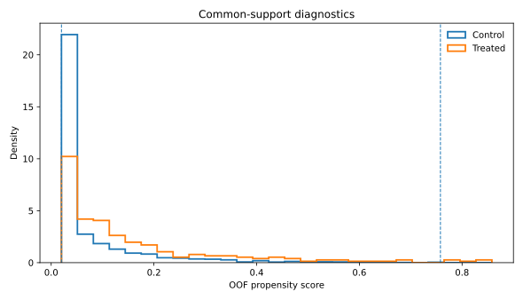

分析子样本n=2771，品规203个；时间外测试窗10个月，处理观测109条。
Top-30%相对其余处理对象的下一期状态变化月均提升 -0.585，中位提升 -0.734。

Top-20%相对全部处理对象增益 -0.665；相对处理前状态评分基线增益 2.645。

| top_pct | n | all_treated_mean_Y | model_mean_Y | model_gain_vs_all | model_improve_rate | state_baseline_mean_Y | gain_vs_state | inventory_baseline_mean_Y | gain_vs_inventory |
|---|---|---|---|---|---|---|---|---|---|
| 10 | 11 | 2.178 | -0.357 | -2.535 | 0.545 | -1.255 | 0.899 | 1.251 | -1.608 |
| 20 | 22 | 2.178 | 1.513 | -0.665 | 0.591 | -1.132 | 2.645 | 3.052 | -1.539 |
| 30 | 33 | 2.178 | 2.707 | 0.529 | 0.636 | -0.468 | 3.175 | 1.028 | 1.679 |
| 40 | 44 | 2.178 | 3.186 | 1.008 | 0.636 | -0.079 | 3.265 | 1.325 | 1.860 |
| 50 | 55 | 2.178 | 2.756 | 0.578 | 0.582 | -0.358 | 3.114 | 1.264 | 1.492 |
Spearman中位数 0.783；Top-20%重合率中位数 0.663。

处理样本支持域外占比 2.03%；支持域内AIPW=4.661，95%CI [1.943, 7.379]。

| sample | n | n_treat | ate_aipw | se | ci_low | ci_high | support_lo | support_hi | treated_outside_support_pct |
|---|---|---|---|---|---|---|---|---|---|
| full | 2771 | 246 | 4.644 | 1.384 | 1.931 | 7.358 | 0.020 | 0.758 | 2.033 |
| common_support | 2766 | 241 | 4.661 | 1.387 | 1.943 | 7.379 | 0.020 | 0.758 | 2.033 |